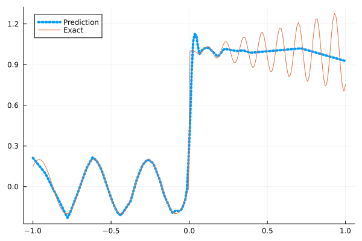
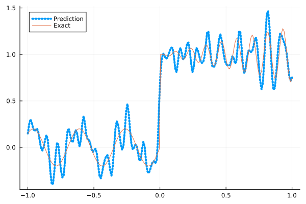
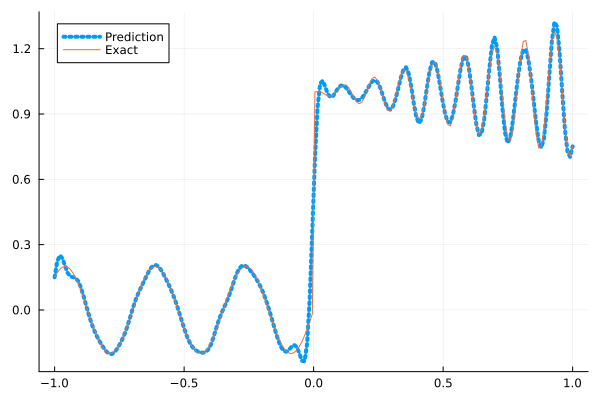
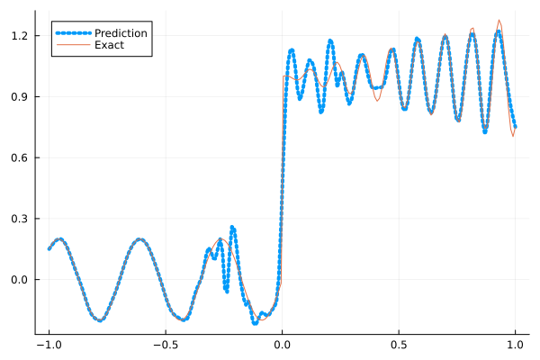
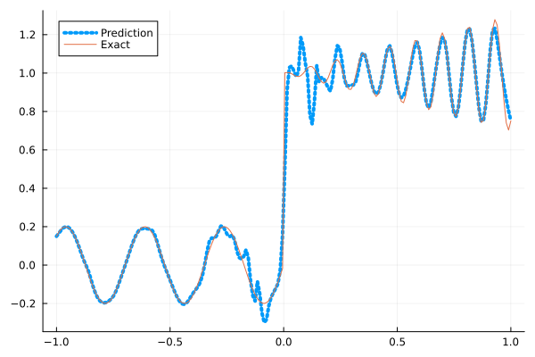

Fitting a nonlinear discontinuous function
This example is taken from here. However, we do not use adaptive activation functions. Instead, we show that using suitable non-parametric activation functions immediately performs better.
Consider the following discontinuous function with discontinuity at $x=0$:
\[u(x)= \begin{cases}0.2 \sin (18 x) & \text { if } x \leq 0 \\ 1+0.3 x \cos (54 x) & \text { otherwise }\end{cases}\]
The domain is $[-1,1]$. The number of training points used is 50.
Import pacakges
using Lux, Sophon
using NNlib, Optimisers, Plots, Random, StatsBase, ZygoteDataset
function u(x)
if x <= 0
return 0.2 * sin(18 * x)
else
return 1 + 0.3 * x * cos(54 * x)
end
end
function generate_data(n=50)
x = reshape(collect(range(-1.0f0, 1.0f0, n)), (1, n))
y = u.(x)
return (x, y)
endgenerate_data (generic function with 2 methods)Let's visualize the data.
x_train, y_train = generate_data(50)
x_test, y_test = generate_data(200)
Plots.plot(vec(x_test), vec(y_test),label=false)
Naive Neural Nets
First we demonstrate show naive fully connected neural nets could be really bad at fitting this function.
model = FullyConnected((1,50,50,50,50,1), relu)Chain(
layer_1 = Dense(1 => 50, relu), # 100 parameters
layer_2 = Dense(50 => 50, relu), # 2_550 parameters
layer_3 = Dense(50 => 50, relu), # 2_550 parameters
layer_4 = Dense(50 => 50, relu), # 2_550 parameters
layer_5 = Dense(50 => 1), # 51 parameters
) # Total: 7_801 parameters,
# plus 0 states, summarysize 80 bytes.Train the model
function train(model, x, y)
ps, st = Lux.setup(Random.default_rng(), model)
opt = Adam()
st_opt = Optimisers.setup(opt,ps)
function loss(model, ps, st, x, y)
y_pred, _ = model(x, ps, st)
mes = mean(abs2, y_pred .- y)
return mes
end
for i in 1:2000
gs = gradient(p->loss(model,p,st,x,y), ps)[1]
st_opt, ps = Optimisers.update(st_opt, ps, gs)
if i % 100 == 1 || i == 2000
println("Epoch $i || ", loss(model,ps,st,x,y))
end
end
return ps, st
endtrain (generic function with 1 method)Plot the result
@time ps, st = train(model, x_train, y_train)
y_pred = model(x_test,ps,st)[1]
Plots.plot(vec(x_test), vec(y_pred),label="Prediction",line = (:dot, 4))
Plots.plot!(vec(x_test), vec(y_test),label="Exact",legend=:topleft)Epoch 1 || 1.247599114133012
Epoch 101 || 0.016719214869478995
Epoch 201 || 0.014881361619617239
Epoch 301 || 0.013630787756448264
Epoch 401 || 0.013043780733493176
Epoch 501 || 0.012792556497464979
Epoch 601 || 0.012494773100869555
Epoch 701 || 0.012011246197929483
Epoch 801 || 0.011280109066835355
Epoch 901 || 0.010139223278838818
Epoch 1001 || 0.008153160966616231
Epoch 1101 || 0.0076801145303412
Epoch 1201 || 0.007601677153555626
Epoch 1301 || 0.007607082672319523
Epoch 1401 || 0.007564851886619057
Epoch 1501 || 0.007537911087468976
Epoch 1601 || 0.007541269157502135
Epoch 1701 || 0.007514350395913916
Epoch 1801 || 0.007498991935970112
Epoch 1901 || 0.007467181049374737
Epoch 2000 || 0.007450700240570425
10.264218 seconds (13.16 M allocations: 1.483 GiB, 6.57% gc time, 91.86% compilation time)
Siren
We use four hidden layers with 50 neurons in each.
model = Siren(1,50,50,50,50,1; omega = 30f0)Chain(
layer_1 = Dense(1 => 50, sin), # 100 parameters
layer_2 = Dense(50 => 50, sin), # 2_550 parameters
layer_3 = Dense(50 => 50, sin), # 2_550 parameters
layer_4 = Dense(50 => 50, sin), # 2_550 parameters
layer_5 = Dense(50 => 1), # 51 parameters
) # Total: 7_801 parameters,
# plus 0 states, summarysize 88 bytes.@time ps, st = train(model, x_train, y_train)
y_pred = model(x_test,ps,st)[1]
Plots.plot(vec(x_test), vec(y_pred),label="Prediction",line = (:dot, 4))
Plots.plot!(vec(x_test), vec(y_test),label="Exact",legend=:topleft)Epoch 1 || 0.689343671614612
Epoch 101 || 0.0009439986584957824
Epoch 201 || 4.5117240503051815e-5
Epoch 301 || 1.6215507865682175e-6
Epoch 401 || 3.42589353296514e-8
Epoch 501 || 3.5369448435127695e-10
Epoch 601 || 3.1128747943543346e-12
Epoch 701 || 2.083284269692156e-13
Epoch 801 || 8.168521039986824e-14
Epoch 901 || 5.2797717230381495e-14
Epoch 1001 || 4.252272568783824e-14
Epoch 1101 || 4.974059218929078e-14
Epoch 1201 || 4.4878537521807184e-14
Epoch 1301 || 8.572468772577269e-14
Epoch 1401 || 4.7377004044426556e-14
Epoch 1501 || 9.765805317608427e-14
Epoch 1601 || 1.0272638129775272e-13
Epoch 1701 || 6.411864515427313e-14
Epoch 1801 || 5.5893498735381945e-14
Epoch 1901 || 5.839609447634988e-14
Epoch 2000 || 3.753680986192735e-13
5.257703 seconds (8.15 M allocations: 1.297 GiB, 7.39% gc time, 83.35% compilation time)
As we can see the model overfits the data, and the high frequencies cannot be optimized away. We need to tunning the hyperparameter omega
model = Siren(1,50,50,50,50,1; omega = 10f0)Chain(
layer_1 = Dense(1 => 50, sin), # 100 parameters
layer_2 = Dense(50 => 50, sin), # 2_550 parameters
layer_3 = Dense(50 => 50, sin), # 2_550 parameters
layer_4 = Dense(50 => 50, sin), # 2_550 parameters
layer_5 = Dense(50 => 1), # 51 parameters
) # Total: 7_801 parameters,
# plus 0 states, summarysize 88 bytes.@time ps, st = train(model, x_train, y_train)
y_pred = model(x_test,ps,st)[1]
Plots.plot(vec(x_test), vec(y_pred),label="Prediction",line = (:dot, 4))
Plots.plot!(vec(x_test), vec(y_test),label="Exact",legend=:topleft)Epoch 1 || 0.7991651339426508
Epoch 101 || 0.00680328824378101
Epoch 201 || 0.0046247962594743045
Epoch 301 || 0.0034354448553695054
Epoch 401 || 0.002655321793089986
Epoch 501 || 0.0020044264678756142
Epoch 601 || 0.0014119967267931669
Epoch 701 || 0.0008891235672398092
Epoch 801 || 0.0004718223985268213
Epoch 901 || 0.00021249058858411953
Epoch 1001 || 0.00010332261043337586
Epoch 1101 || 6.837774313007279e-5
Epoch 1201 || 5.4432797243273524e-5
Epoch 1301 || 4.6100796189522355e-5
Epoch 1401 || 4.0201617038008176e-5
Epoch 1501 || 3.5813593185228555e-5
Epoch 1601 || 3.245728247279547e-5
Epoch 1701 || 2.9813704277371953e-5
Epoch 1801 || 2.765998193011897e-5
Epoch 1901 || 2.5841514874410948e-5
Epoch 2000 || 2.426869080365695e-5
0.756053 seconds (1.15 M allocations: 892.475 MiB, 8.75% gc time)
Gaussian activation function
We can also try using a fully connected net with the gaussian activation function.
model = FullyConnected((1,50,50,50,50,1), gaussian)Chain(
layer_1 = Dense(1 => 50, gaussian), # 100 parameters
layer_2 = Dense(50 => 50, gaussian), # 2_550 parameters
layer_3 = Dense(50 => 50, gaussian), # 2_550 parameters
layer_4 = Dense(50 => 50, gaussian), # 2_550 parameters
layer_5 = Dense(50 => 1), # 51 parameters
) # Total: 7_801 parameters,
# plus 0 states, summarysize 80 bytes.@time ps, st = train(model, x_train, y_train)
y_pred = model(x_test,ps,st)[1]
Plots.plot(vec(x_test), vec(y_pred),label="Prediction",line = (:dot, 4))
Plots.plot!(vec(x_test), vec(y_test),label="Exact",legend=:topleft)Epoch 1 || 0.748781952325123
Epoch 101 || 0.005985000463170158
Epoch 201 || 0.005077239754349555
Epoch 301 || 0.004016985167151307
Epoch 401 || 0.0027366950153029325
Epoch 501 || 0.002007643925784996
Epoch 601 || 0.0011836103791578573
Epoch 701 || 0.00038722308745073515
Epoch 801 || 7.524908559564691e-5
Epoch 901 || 6.582351221208547e-6
Epoch 1001 || 3.300149473331335e-6
Epoch 1101 || 2.0655569344444378e-6
Epoch 1201 || 7.327485506018785e-5
Epoch 1301 || 9.713244813630552e-7
Epoch 1401 || 5.48322495488779e-7
Epoch 1501 || 7.64332746316196e-5
Epoch 1601 || 3.763157932185146e-7
Epoch 1701 || 1.8159769410054573e-7
Epoch 1801 || 0.0004179755490505381
Epoch 1901 || 7.742030894250425e-8
Epoch 2000 || 2.893046379425557e-8
4.919659 seconds (7.28 M allocations: 1.251 GiB, 6.63% gc time, 81.22% compilation time)
Quadratic activation function
quadratic is much cheaper to compute compared to the Gaussain activation function.
model = FullyConnected((1,50,50,50,50,1), quadratic)Chain(
layer_1 = Dense(1 => 50, quadratic), # 100 parameters
layer_2 = Dense(50 => 50, quadratic), # 2_550 parameters
layer_3 = Dense(50 => 50, quadratic), # 2_550 parameters
layer_4 = Dense(50 => 50, quadratic), # 2_550 parameters
layer_5 = Dense(50 => 1), # 51 parameters
) # Total: 7_801 parameters,
# plus 0 states, summarysize 80 bytes.@time ps, st = train(model, x_train, y_train)
y_pred = model(x_test,ps,st)[1]
Plots.plot(vec(x_test), vec(y_pred),label="Prediction",line = (:dot, 4))
Plots.plot!(vec(x_test), vec(y_test),label="Exact",legend=:topleft)Epoch 1 || 0.3182382871884133
Epoch 101 || 0.006120927406902392
Epoch 201 || 0.0053328381130213496
Epoch 301 || 0.0045404708862350155
Epoch 401 || 0.0037787598018912986
Epoch 501 || 0.002859183615201901
Epoch 601 || 0.0008627769728019954
Epoch 701 || 4.5021744342895515e-5
Epoch 801 || 1.383538156753126e-6
Epoch 901 || 3.3895844035769844e-6
Epoch 1001 || 1.653087093510339e-8
Epoch 1101 || 4.689461844410841e-10
Epoch 1201 || 7.944190412763991e-7
Epoch 1301 || 1.692171150304211e-8
Epoch 1401 || 3.6166881040034054e-11
Epoch 1501 || 3.5492140502256344e-7
Epoch 1601 || 9.037223943079397e-8
Epoch 1701 || 1.8799235675111158e-6
Epoch 1801 || 3.908230333978397e-7
Epoch 1901 || 0.0003593498495913517
Epoch 2000 || 1.3489016161922554e-7
4.427049 seconds (7.03 M allocations: 1.234 GiB, 7.16% gc time, 86.41% compilation time)
Conclusion
"Neural networks suppresse high frequency components" is a misinterpretation of the spectral bias. The accurate way of putting it is that the lower frequencies in the error are optimized first in the optimization process. This can be seen in Siren's example of overfitting data, where you do not have implicit regularization. The high frequency in the network will never go away because it has fitted the data perfectly.
Mainstream attributes the phenomenon that neural networks "suppress" high frequencies to gradient descent. This is not the whole picture. Initialization also plays an important role. Siren mitigats this problem by initializing larger weights in the first layer, while activation functions such as gassian have large enough gradients and sufficiently large support of the second derivative with proper hyperparameters. Please refer to Vincent Sitzmann, Julien Martel, Alexander Bergman, David Lindell, Gordon Wetzstein (2020), Sameera Ramasinghe, Simon Lucey (2021) and Sameera Ramasinghe, Lachlan MacDonald, Simon Lucey (2022) if you want to dive deeper into this.